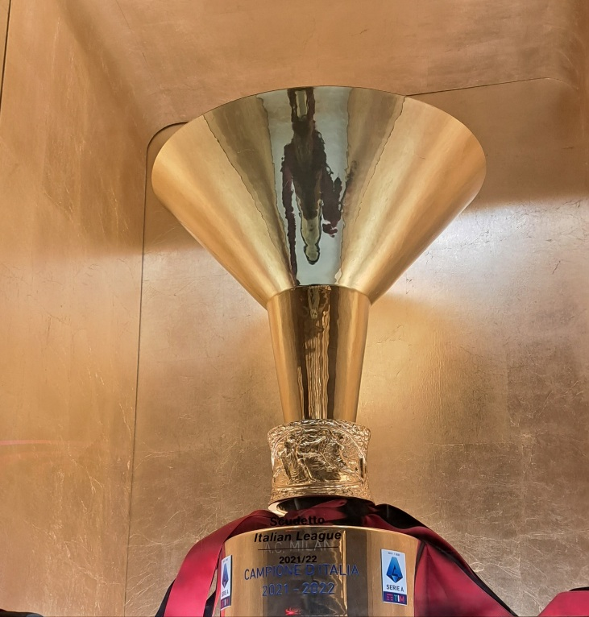

La série A est le plus haut niveau du football Italien. Elle a été fondée en 1898 et est connue pour ses clubs emblématiques comme la Juventus (38 titres), l'Inter Milan (20 titres) et l'AC Milan (19 titres).
La série A est composée de 20 équipes qui s'affrontent en matches aller-retour durant une saison. Chaque équipe joue un total de 38 matches. Les équipes reçoivent trois points pour une victoire, un point pour un match nul et aucun point pour une défaite.
Les trois équipes terminant en bas du classement sont reléguées en série B, tandis que les trois meilleurs équipes de série B sont promues en série A. Les quatres meilleures équipes de la série A se qualifient directement pour la Ligue Des Champions, et les équipes terminant 5ème et 6ème se qualifient pour la Ligue Europa.
À la fin de la saison, la club ayant remporté le plus de points devient champion et remporte le trophée de la série A.
